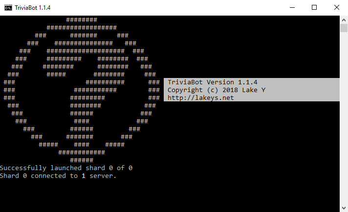

TriviaBot
Manual Install Guide
Contribute Questions
Support it on Patreon
+ Invite
TriviaBot
Manual Install Guide
Contribute Questions
Support it on Patreon
+ Invite
TriviaBot is open-source and can be downloaded for free. This guide shows you how to install TriviaBot on a Windows, Linux, or Android system. Note that installing TriviaBot using this method is completely optional. For general use, you can simply invite TriviaBot to your server directly.
If you enjoy using TriviaBot as a free and open source application, please consider supporting it on patreon.
Download TriviaBot for Windows Download TriviaBot for Linux Table of Contents
1. How to Install - Windows1.1: Creating the bot account
1.2: Setting up the bot
1.3: Run the bot!
2. How to Install - Linux
2.0.1: Android Devices
2.0.2: Raspberry Pi/Raspbian OS
2.1: Creating the bot account
2.2: Setting up the bot
2.3: Run the bot!
How to Install - Windows
Creating the bot account
- Log in to the Discord Developer Portal and click "Create an application". Name the bot anything you like. Write down the client ID as you will need it for later.
- On the left hand side, click "Bot". Now click the "Add Bot" button to create your bot. Now you can set an avatar for your bot if desired.
- Under "Token" click the link that says "click to reveal". This is the password for your bot's account. You'll need this and the Client ID number later. Copy them both somewhere safe or keep the tab open.
- Paste the URL listed below into your browser and replace "CLIENT_ID" with your client ID number. Hit enter and select the desired Discord server. Once this is done, the bot will show up in your server!
Setting up the bot
- Download the TriviaBot program and extract it somewhere on your system.
- Install Node.js LTS from this website.
- Once Node.js is finished installing, run install.bat in the bot's folder. This will automatically install the required modules for the bot.
- Right click the bot's config.json file and click "Edit".
- Find "your_token_here" and replace it with the Discord token from earlier.
Run the bot!
Once you complete all of this, you will be able to run the bot by opening run.bat. If you've done all of this correctly, you will see the following in the terminal: TriviaBot connected to 1 Discord Server.
Note that if you close this terminal the bot will be disconnected. In Windows, the bot can be run in the background with no terminal by opening run_silent.vbs.
You may want to create a shortcut to run.bat or run_silent.vbs in your Startup folder:
C:\Users\[YOURNAME]\AppData\Roaming\Microsoft\Windows\Start Menu\Programs\Startup
How to Install - Linux
Android Devices
The bot can be installed on Android devices using the Termux app. No rooting is required! Once installed, enter apt update and apt install nodejs curl. Then, proceed with the installation as a Linux system. You may need access to a desktop computer in order to create the bot account.
Raspberry Pi/Raspbian OS
TriviaBot can be run from a Raspberry Pi device by installing Node.js.
First, follow the Node.js install instructions found here under "Debian and Ubuntu based Linux distributions". Once this is done, you can proceed with the instructions below. You may need access to a desktop computer in order to create the bot account.
Creating the bot account
- Log in to the Discord Developer Portal and click "Create an application". Name the bot anything you like. Write down the client ID as you will need it for later.
- On the left hand side, click "Bot". Now click the "Add Bot" button to create your bot. Now you can set an avatar for your bot if desired.
- Under "Token" click the link that says "click to reveal". This is the password for your bot's account. You'll need this and the Client ID number later. Copy them both somewhere safe or keep the tab open.
- Paste the URL listed below into your browser and replace "CLIENT_ID" with your client ID number. Hit enter and select the desired Discord server. Once this is done, the bot will show up in your server!
Setting up the bot
- Open a terminal on your system.
- (Skip this step if installing to an Android or Raspberry Pi device.) Install Node.js and NPM. Install build tools if instructed. How to install via package manager.
- Type curl -L https://github.com/LakeYS/Discord-Trivia-Bot/releases/download/v1.4.0/triviabot.tar.gz > triviabot.tar.gz to download the bot's files to an archive named triviabot.tar.gz.
- Type tar -xzf triviabot.tar.gz to extract the archive. This will create a directory named "TriviaBot". Navigate to the directory with cd TriviaBot.
- Type sudo chmod +x run.sh. This gives you permission to execute run.sh. (If this does not work, try chmod +x run.sh)
- Type npm install to install the required packages for the bot to run.
- Open config.json in a text editor.
- Replace "your_token_here" with the Discord bot token from earlier.
Run the bot!
Once you complete all of this, you will be able to run the bot by executing run.sh (Navigate to the bot's directory and enter ./run.sh). If you've done all of this correctly, you will see the following: TriviaBot connected to 1 Discord Server.